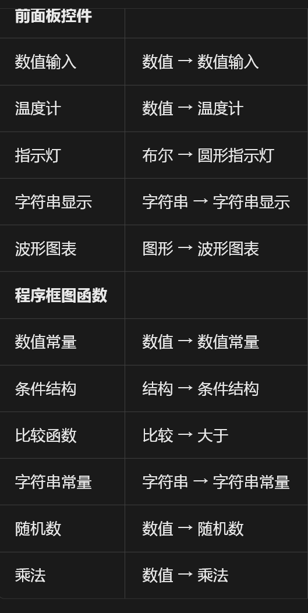

0准备工作：打开并新建 VI
- 打开 LabVIEW。双击桌面上的 LabVIEW 图标启动软件，等待启动界面加载完成。
- 新建一个 VI。点击左上角菜单 文件 → 新建（或 Ctrl + N）。打开后会看到两个并排的面板，这就是本实验要来回切换的两个工作区。
两个面板分别是什么？
| 面板 | 作用 | 你可以做什么 |
|---|
前面板
Front Panel |
用户界面（UI），相当于仪器的操作面板 |
放置温度计圆形指示灯波形图表字符串显示等控件，运行时观察结果 |
程序框图
Block Diagram |
程序的源代码 / 连线图，决定逻辑 |
放置随机数乘法大于条件结构等函数，并用连线把它们连起来 |
核心思想 —— 数据流：LabVIEW 是"数据流动到哪，哪才执行"。一条线把 A 的输出接到 B 的输入，就表示"先算 A，再算 B"。所以连线本身就是程序逻辑，不用写一行代码。两个面板用 Ctrl + E 切换；前面板放的每个控件，都会在程序框图里自动生成对应的接线端。
1实验一：操作步骤
目标：用 随机数 造 0~1 的小数 → 乘 100 变成 0~100 的"温度" → 用 温度计 显示、波形图表 记曲线 → 再和 50 比较：大于 50 亮红灯、显示"温度过高"；否则亮绿灯、显示"温度正常"。
A. 程序框图：搭出"造数据"的链路
- 创建随机数。进入程序框图（Ctrl + E），空白处右键 → 数值 → 随机数 → 左键放置。它每次运行输出一个 0~1 的小数。随机数
- 创建乘法。右键 → 数值 → 乘法 → 左键放置。左边两个输入、右边一个输出。乘法
- 创建数值常量并设为 100。菜单法：右键 → 数值 → 数值常量，双击输入框键入 100。快捷法（推荐）：鼠标移到乘法的输入端，等左侧冒出小圆点、鼠标闪烁时右键 → 创建 → 常数，自动生成已接好的常量。数值常量
为什么是 100：随机数是 0~1，乘 100 后正好变成 0~100，用来模拟 0~100 ℃ 的温度。
- 连线：随机数 × 100。从随机数和常量(100)的输出端（小三角）分别拖到乘法的两个输入端（小圆点）。
线连不上＝拖错端点或类型不符。规则固定是"输出三角 → 输入圆点"，断线会显示成带红叉的虚线。
- 创建"就近取整"。右键 → 数值 → 就近取整，输入接乘法的输出。作用是把小数四舍五入成整数温度（47.83 → 48）。就近取整
B. 前面板：摆控件，再回框图接线
- 在前面板创建三个显示控件。切回前面板，依次右键创建 温度计（数值 → 温度计）、圆形指示灯（布尔 → 圆形指示灯）、波形图表（图形 → 波形图表）。
- 把"就近取整"的输出接到这两个显示端。回程序框图，就近取整 的输出同时接 温度计（显示当前温度）和 波形图表（保存历史并画曲线）。
一个输出可以接多条线：从同一端点拖出第二根即可分叉，LabVIEW 会在分叉处自动打上实心节点。
C. 加上"越限判断 + 报警"的逻辑
- 创建比较函数，与 50 比较。右键 → 比较 → 大于，一个输入接就近取整的输出，另一个输入用快捷法建常量、填 50。大于
大于 / 小于等于都行，逻辑看自己的设计思路。本教程按"大于 50 → 报警"搭。
- 创建条件结构与两条字符串。右键 → 结构 → 条件结构；再建两个 字符串常量（字符串 → 字符串常量），分别填 "温度过高" 和 "温度正常"；最后建一个 字符串显示（字符串 → 字符串显示）。条件结构
- 接进条件结构，两个分支各放一条字符串。把大于的输出接到条件结构左侧的选择端（问号端子）；在结构边框上右键 → 添加分支，确认有"真""假"两支；在"假"分支放 "温度正常"、点顶部标签切到"真"分支放 "温度过高"，两条都连到右侧输出隧道，再把输出接到字符串显示。
关键点：条件结构的每个分支都必须给输出隧道赋值，否则隧道显示为空心，程序跑不起来。
- 接指示灯，并设置红/绿颜色。把大于的输出直接接圆形指示灯（即"大于 50 就亮"）；回到前面板右键指示灯 → 属性 → 颜色，把真设为红、假设为绿。
最终效果：温度 > 50 ℃ → 红灯 + "温度过高"；温度 ≤ 50 ℃ → 绿灯 + "温度正常"。
2部件速查表（四列）
上面每个部件都带一个彩色圆点标签。下表按「类别 → 部件 → 右键菜单路径 → 色标」四列对齐列出：先按"类别"列找到分组，再顺着"路径"列逐级点开右键菜单即可。
| 类别 |
部件 |
右键菜单路径 |
本教程色标 |
| 前面板控件 |
数值输入 |
数值 → 数值输入 |
数值输入 |
| 温度计 |
数值 → 温度计 |
温度计 |
| 指示灯 |
布尔 → 圆形指示灯 |
圆形指示灯 |
| 字符串显示 |
字符串 → 字符串显示 |
字符串显示 |
| 波形图表 |
图形 → 波形图表 |
波形图表 |
| 程序框图函数 |
数值常量 |
数值 → 数值常量 |
数值常量 |
| 条件结构 |
结构 → 条件结构 |
条件结构 |
| 比较函数 |
比较 → 大于 |
大于 |
| 字符串常量 |
字符串 → 字符串常量 |
字符串常量 |
| 随机数 |
数值 → 随机数 |
随机数 |
| 乘法 |
数值 → 乘法 |
乘法 |
| 就近取整补充 |
数值 → 就近取整 |
就近取整 |
关于色标：色标是本教程自定的辅助记忆色，LabVIEW 软件本身不会把部件显示成这些颜色。它的作用是让正文、上表、下方示意图三处用同一个颜色指代同一个部件，方便来回对照。
查看原始截图（LabVIEW_POS.png）

图 1 原始速查截图。内容已在上表完整转写为文字表格，此图仅作对照留存。
3程序框图数据流示意
把上面各步连起来就是这张图，颜色与第 2 节色标一一对应。数据从左往右、自上而下流动：造数 → 取整 → 显示 / 比较 → 分支报警。
图 2 实验一程序框图数据流示意（颜色与第 2 节部件色标一致）
4运行与验证
- 先检查连线。看程序框图工具栏的「运行」箭头：若显示为断裂的灰色箭头，说明程序有错，点击它会弹出错误列表，逐条修复后再继续。
- 连续运行。点击工具栏的「连续运行」（循环箭头按钮），程序会不断产生新的随机温度，波形图表上实时画出曲线。
- 观察现象。温度计指针随随机数跳动，圆形指示灯 在红/绿之间切换，字符串显示 在"温度过高"/"温度正常"之间切换——三者应当始终同步。
判断是否搭对了：只要出现"红灯 ↔ 温度过高"、"绿灯 ↔ 温度正常"这两组一一对应的现象，实验就成功了。
5易错点与调试提示
| 现象 / 问题 | 原因与解决办法 |
|---|
| 运行箭头是断裂的灰箭头 |
存在连线错误。点击断裂箭头查看错误列表，通常是条件结构某个分支的输出隧道没接线，或数据类型不匹配。 |
| 线拉不出来 / 连不上 |
必须从输出端（小三角）拖到输入端（小圆点）；把鼠标悬停在端点上会出现闪烁的小圆点提示。 |
| 温度显示总是 0 或 1 |
数值常量 没设成 100，或 乘法 的两个输入接反/未接。检查"随机数 × 100"这条链。 |
| 指示灯颜色不对 |
回到前面板，右键指示灯 → 属性 → 颜色，把真设为红、假设为绿（或按你的逻辑互换）。 |
| 字符串始终显示同一个值 |
条件结构 只有一个分支接了字符串常量，另一个分支是空的。点结构顶部标签切换分支，把两条都接上。 |
| 波形图表不画曲线 |
波形图表 未接到 就近取整 的输出，或只在单次运行时执行一次（改用连续运行才能看到曲线累积）。 |
| 找不到某个部件 |
对照 第 2 节 部件速查表，按"类别 → 部件 → 路径"三列定位（如 布尔 → 圆形指示灯）。 |
0函数从哪来：自定义/用户 → smart
目标：用「smart」用户库里的传感器 VI，读出一路传感器的类型 / ID / 名称 / 连接状态，设定采样频率与数量，然后在 While 循环里反复采集数据，把数值送进波形图表画曲线。
本实验用到的 VI 不在标准函数选板里，它们放在一个叫 smart 的用户库中。找法只有一条路径：
程序框图空白处右键 → 把弹出的函数选板菜单拉到最下面 → 找到 「自定义」/「用户」 分类 → 展开 smart → 里面就是本实验要用的全部 VI。
| VI 名称 | 作用 |
|---|
| Set Sensor Type.vi | 设定传感器类型（另一个输入接常量 0） |
| Get Sensor ID.vi | 按编号取传感器 ID（另一个输入接常量 1） |
| Get Sensor Name.vi | 由 ID 取出传感器名称，输出给字符串显示 Name |
| Connected.vi | 判断传感器是否连接，输出给指示灯 iConnected |
| Set Freq And Count.vi | 设定采样频率与数量（接常量 100 与 1000），输出 fc 给指示灯 Read |
| Read Data.vi | 执行一次数据读取，输出给指示灯 Read |
| Get Record Count.vi | 取回当前记录条数，输出给数值显示 Count |
| Get Value.vi | 取出测量值（输入接常量 1），输出给 Value 与波形图表 |
⚠️ 第一次创建会报错，点「确定」即可。首次从 smart 里把这些 VI 拖到程序框图时，LabVIEW 会弹出一个报错对话框——这是正常现象（用户库加载提示），直接点 「确定」 关掉就行，不影响后续连线和使用。
1实验二：操作步骤
A. 配置传感器（循环外，只执行一次）
- 放置 smart 库 VI。在程序框图空白处右键 → 拉到最下面 → 自定义/用户 → smart，把本实验要用的 VI 依次拖出来。第一次拖出时会报错，点「确定」。
- 创建两个控件。回到前面板，创建 Type 与 ID 两个控件（ID 用 I32，示例值 123）。
- 接传感器类型。Type → Set Sensor Type.vi；该 VI 的另一个输入端用快捷法建常量，填 0。
- 取 ID 与名称。ID → Get Sensor ID.vi（另一输入接常量 1）；再把它的输出接到 Get Sensor Name.vi，输出接字符串显示 Name。
- 接连接状态。Connected.vi 的输出接指示灯 iConnected。
B. 设定采样频率与数量
- 建两个常量。程序框图里创建两个数值常量，分别填 100（频率）与 1000（数量）。数值常量
- 接 Set Freq And Count.vi。两个常量分别接到该 VI 的两个输入端，它的输出 fc 接指示灯 Read。
C. 放进 While 循环反复采集
- 放置 While 循环。右键 → 结构 → While 循环，把采集相关的 VI 全部拖进循环框内（框外的配置部分留在外面）。
- 读取数据。Read Data.vi 的输出接指示灯 Read，表示本圈是否读到数据。
- 取记录条数。Get Record Count.vi 的输出接数值显示 Count。
- 取测量值。Get Value.vi 的输入端接常量 1，输出接数值显示 Value。
- 送波形图表。Value 再接到 波形图表，把每圈的数值画成曲线。
- 控制循环节奏。数值常量 1000 接到定时/等待函数（时钟图标），决定每圈之间的间隔。
- 加停止按钮。前面板放一个 停止（STOP） 按钮，接 While 循环右下角的条件端（红点），用来结束循环。
While 循环默认「条件端为真时继续」，接上 STOP 按钮后需在条件端上右键 → 真时停止，否则按钮逻辑会反过来。
- 运行观察。点「连续运行」，观察 波形图表 曲线、Count 与 Value 的读数，以及 Read／iConnected 指示灯的状态。
2程序框图数据流示意
整张框图分两块：上方是配置区（循环外，只跑一次：设定类型 → 取 ID/名称 → 判断连接 → 设定频率与数量），下方是 While 循环（每圈读一次数据、取记录数与测量值、送波形图表，由 STOP 按钮退出）。
图 3 实验二程序框图数据流示意（依据实验二框图绘制）
3易错点与调试提示
| 现象 / 问题 | 原因与解决办法 |
|---|
| 标准选板里找不到这些 VI |
它们不在标准函数选板，必须从 自定义/用户 → smart 里找（右键菜单拉到最下面）。 |
| 首次拖入 VI 时弹出报错 |
正常现象（用户库加载提示），直接点 「确定」 关掉即可，不影响使用。 |
| 程序跑起来停不下来 |
检查 STOP 按钮是否接到 While 循环右下角的条件端，以及条件端是否设为「真时停止」。 |
| 波形图表不出曲线 |
检查 Get Value.vi 的输出是否接到了 Value 与波形图表；确认是「连续运行」而不是只跑一次。 |
| Count / Value 一直是 0 |
检查 Get Record Count.vi、Get Value.vi 的输入端是否接好（Get Value.vi 需接常量 1），以及传感器是否真的处于连接状态（看 iConnected 灯）。 |
| 循环转得太快 / 太慢 |
调整接在定时/等待上的常量（图中为 1000，单位 ms），或修改 Set Freq And Count.vi 上的频率与数量。 |